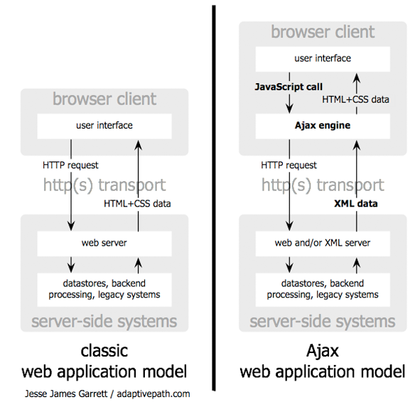

프레젠테이션 발표 기술
최 대리가 배운 프레젠테이션 발표 기술에 대해 윤 대리가 석연치 않은 반응을 보이고 있습니다. 과연 어떤 내용이기에 그러는 걸까요? 다음 발표 기술 두 가지를 살펴봅시다.
자료 구성의 기술
- 압축하고 도식화하고 시각화한다.
- 청중의 이해가 빨라야 한다.
- 청중의 흥미를 이끌어내야 한다.
- 메시지가 오래 기억에 남아야 한다.
- 효율적인 자료구성의 법칙
- 청중의 이해가 빨라야 한다.
- 청중의 흥미를 이끌어내야 한다.
- 메시지가 오래 기억에 남아야 한다.
발표 실행의 기술

[Fig 1] Ajax example caption